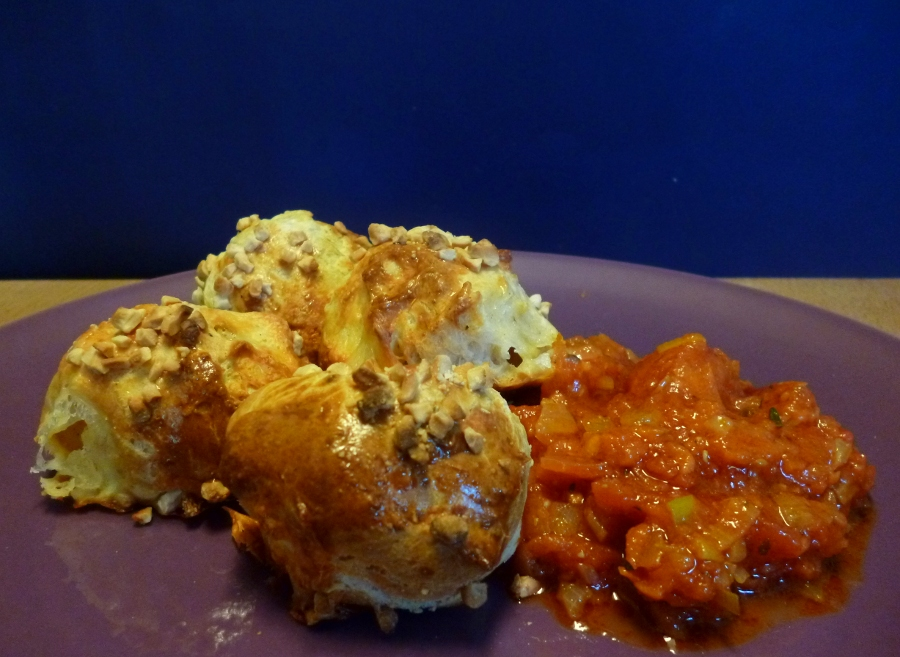

LA GOUGÈRE
Ingredientes
- 175 ml de agua
- 50 g de mantequilla
- Sal, pimienta
- 125 g de harina de repostería
- 3 huevos grandes o 4 pequeños
- 75 g de gruyère rallado gordo
- Nuez moscada
- 1 huevo para brillar si no ha sobrado huevo de la masa
- Almendras en cubitos o fileteadas para adornar
- 1 salsera de salsa de tomate aromatizada con comino

Encender el horno a 175º C.
Comenzar a añadir los huevos 1 a 1, integrando el primero antes de añadir el siguiente –esto se puede hacer con una batidora, incluso se puede hacer toda la masa con un robot, eso va en gustos. El último huevo echarlo de cucharada en cucharada hasta que la masa esté bien suave pero con cuerpo. Mezclar con el queso, probar de sal –el gruyère suele ser salado, pero otros quesos no lo son tanto– y añadir un poco más con una buena cantidad de nuez moscada. Revolver por última vez.
Dibujar en un papel de horno un círculo de 15 cm de diámetro con lápiz. Darle la vuelta e ir colocando bolas –se hacen entre dos cucharas, como croquetas redondas– de masa del tamaño de huevos pequeñitos un poco separadas. Pintar de huevo y adornar con las almendras.
Hornear en el horno ya caliente durante 25 minutos. ¡No abrir el horno antes de que la masa haya subido!. Las bolas se habrán pegado en una rosca.
Servir bien caliente con una salsa de tomate bien especiada con comino –eso es de mi cosecha, lo mismo que las almendras, que no son imprescindibles, pero a mi me gusta así.
NOTA: En la región suiza en la que se cocina esta maravilla no hacen bolitas. Echan la masa en la mesa enharinada y forman una corona –es difícil, es pegajosa– que colocan en la bandeja del horno. La pintan con huevo y esparcen por encima más queso de gruyère antes de hornear. Voilà!